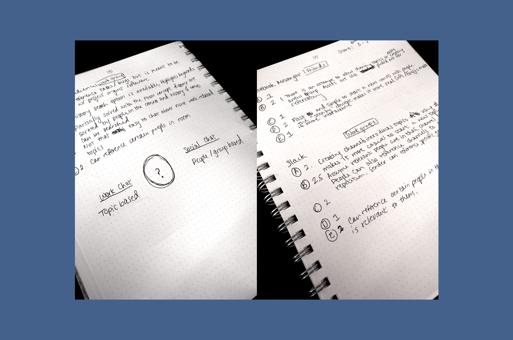
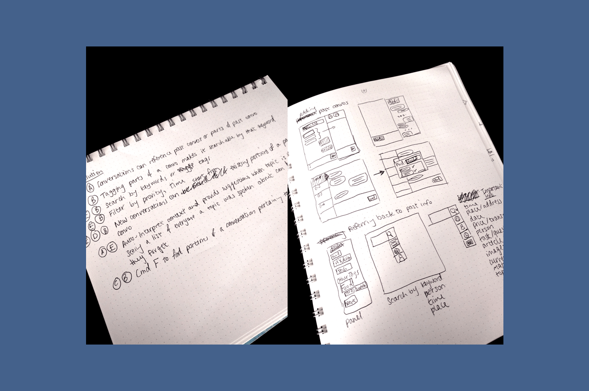

Context is a messenger app that aims to better organize social conversations people have with friends and family. One day, Evan, Brandon and I were discussing common issues we have with today's messaging software and decided to tackle some of these challenges with a new app, which we later named "Context".
We noticed that messaging apps today more closely mimic the patterns of in-person conversations than it used to. Unlike other pre-existing communcation channels (ie. email, forums, social media posts etc), messaging friends and family is more real-time, raw and candid. With a quick influx of information at a high volume, social conversations are not often designed with the focus around information retrieval at a future time. Thus, we decided to do some research and evaluate the problem space to determine if there truly is a problem to be solved.
I initiated our conversation with a brainstorming session of common user concerns with pre-existing messaging apps. Along the way, we noted down the different scenarios in which such concerns occur.
These can be summarized with the below major problem areas:
Following the problem identification, I looked at a couple popular apps that people use for both social and team collaboration purposes - Facebook Messenger, Slack and Hipchat. Looking at our problems area list, I scored each product in those areas. Of the three products, Slack scored the highest. It is the most versatile messenger app in terms of collaboration tool, but I did still find that it requires some extra discipline to keep organized. Facebook Messenger scored the lowest. However, it does provide that freedom of social exchange without much pressure from the end user to keep the conversations sorted neatly (which Hipchat and Slack both didn't do as well).
Ideally, we want Context to have features such as contextual search and be able to slot certain portions of a conversation together if they are relevant to the same topic. However, before we advance to that level of speech context prediction machine learning capability, we thought to come up with some viable solutions to oversome the user challenges and help us collect useful data patterns around user conversations.
In the image above, the three of us came up with solutions that would answer each of the problem areas we listed earlier and labeled each solution with the problems it does address. I also took some of those solutions and did some rough sketches with them.
As I was playing around with different UI's for the final product, I noticed an interesting pattern in people's conversations and conduct an experiment to determine what kinds of information users would like to reference back to. This is what I confirmed:
I began wireframing a couple concepts. The idea of tagging portions of a conversation seems promising. However, it is important to not overburden users with this feature since it may detract from a normal conversation flow. I played around with a couple ways of referencing past conversations into the current one. I also played with various ways of displaying tagged information and how that would play together with the rest of the chat. Here are some wireframes:
Finally, I took my favorite concept and created hi-fi mockups with them.